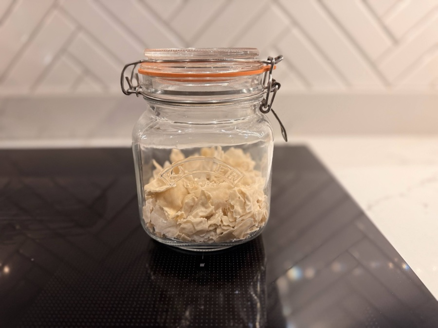
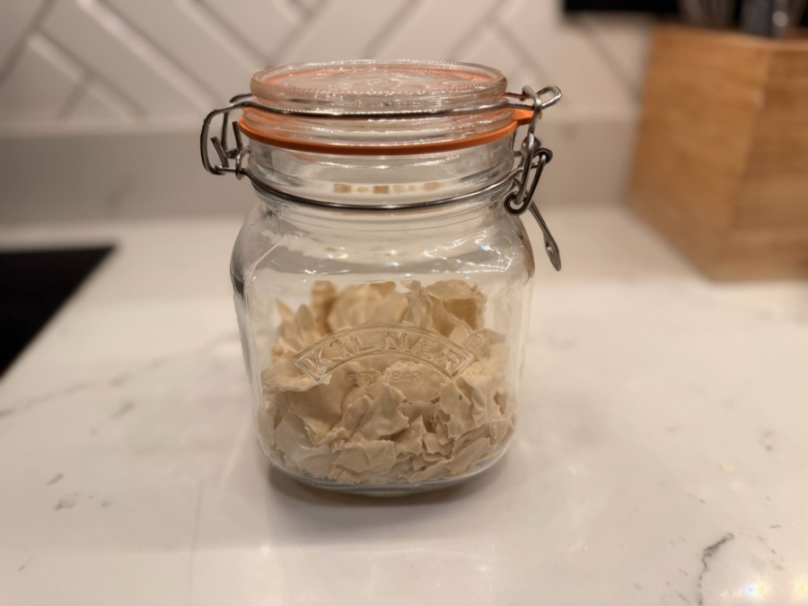

How to Dehydrate Your Sourdough Starter

A jar of starter is only as safe as the fridge it lives in. Drying some down into flakes gives you a backup that doesn't need feeding, doesn't die if you forget about it for a few weeks, and can sit in a cupboard or go in the post. It's the same starter I use daily to bake for my own family, and it's also how I get it to people who buy it from my Etsy shop.
The process itself is simple: feed your starter, spread it thin, and let a low oven do the rest overnight.
What You'll Need
- Active, recently fed starter
- Strong white bread flour and water
- Greaseproof or parchment paper
- A baking tray
- An oven that can hold a low, steady temperature (see the note below if yours can't)
- An airtight jar or bag for storage once it's dry
The Process
- Feed your starter as normal. Mix 30g starter with 50g water and 50g strong white flour. You don't need it to be at its peak for this, any well-fed, active starter will do.
- Spread it thin. Pour the mixture onto a sheet of greaseproof paper on a baking tray and spread it out as thin and even as you can, close to a single translucent layer with a spatula or the back of a spoon. The thinner it goes on, the faster and more evenly it dries, thick patches can stay tacky in the middle long after the edges are brittle.
- Dry it overnight. Put the tray in the oven at around 30C and leave it overnight. This is a very low, dehydrating heat rather than a bake, not a temperature most ovens land on by default. If yours doesn't go that low, the oven light alone is often enough to hold a warm, gentle heat with the door shut, or use a dehydrator on its lowest setting if you have one.
- Check it's properly dry. It's ready when it's brittle and snaps cleanly, with no tacky or leathery patches left anywhere. If any part still bends rather than snaps, it needs longer, see the troubleshooting note below.

Breaking It Up and Storing It
Once it's fully dry, break or crumble the sheet into flakes and store them in an airtight jar or bag. Dried flakes keep for months at room temperature out of direct light, and even longer in the fridge. I keep a jar going as permanent backup, so if my everyday starter ever goes wrong, I'm never starting completely from scratch.
Reviving It Later
Rehydrating dried flakes back into a working starter takes about three days of feeding. I've written up the full method, along with photos of what each stage should look like, on the Bought Starter page.
Troubleshooting
My flakes are still bendy after a full night in the oven
Give them a few more hours. Also worth checking your oven isn't running hotter than you think, an oven thermometer helps if you're unsure, since too much heat can crust the outside while the middle stays damp.
It smells off, or I can see mould
Bin it and start again. This almost always comes down to the layer being too thick or not fully dried before it went into storage, so take extra care spreading it thin next time.
My flakes won't wake up when I try to rehydrate them
Perfectly normal, dried starter is sometimes slower to get going than fresh. Follow the full three-day process on the Bought Starter page before deciding it hasn't worked.
Prefer It Ready-Made?
If you'd rather skip the process and just want a jar of active starter or a packet of dried flakes, I sell both on Etsy, the same starter I use myself.
Dehydrating Starter FAQs
Can I dehydrate starter without a low oven setting?
Yes. If your oven doesn't go as low as 30C, use the oven light on its own (in most ovens the bulb alone keeps the interior warm enough) or a dehydrator on its lowest setting. A sunny windowsill works too, it just takes longer.
How long does dried starter last?
Dried flakes keep for months at room temperature in an airtight jar or bag, out of direct light. They last even longer in the fridge.
Can I post dried starter?
Yes, that's exactly why dehydrating is useful. Dried flakes are lightweight, shelf-stable, and survive normal postal transit without needing refrigeration, unlike a jar of live starter.
Does dehydrating kill the wild yeast in sourdough starter?
No. Drying at a low temperature sends the yeast and bacteria dormant rather than killing them off. Once rehydrated and fed, an active culture wakes back up within a few days.